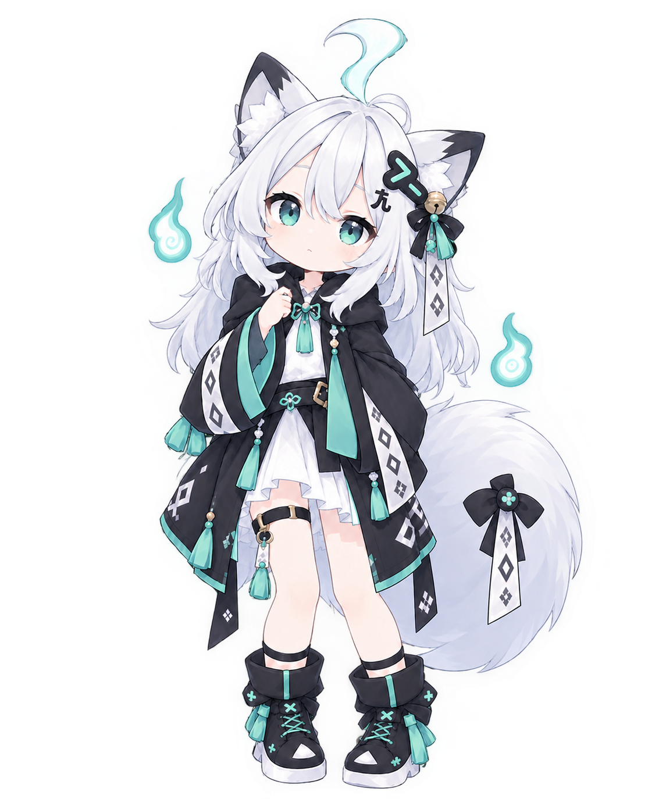

ずっと見張る形ではなく、気になったときに「手順」を押すと、ワークフローとエージェントの様子が図で出る。データはすべて架空。1400×900 の実寸。

面の幅はピルの幅にそろえる（左右の端をピルにそろえて重ねる）。部品はできる限り Astryx（ui/）で組む。
ピルの右端の「手順」（ADR 0070 論点 8 の全体の詳細）の頭に、ワークフローの図を置く。列はフェーズで、ピルの下線の区間と同じ並び・同じ色。箱1つがエージェント1つで、矢印が順番、橙の矢印が差し戻し。
走っているエージェントは差し色の縁と流れる矢印、済んだエージェントは結果の一言、待ちのエージェントは点線、失敗は赤い縁と理由。
箱の2行目の頭の札がエージェントの種類（プラグインの接頭辞を外した短い名）。手元の頭に種類の全名とモデルを出す。種類を渡さないエージェントは札を出さず、手元の頭で「既定のエージェント」と言う（ADR 0081 論点 8）。
図の下に、選んだエージェントの申し送り（SendMessage）と直近の手順を出す。最初は走っているエージェント（並んで回るときは最後に手順が動いたエージェント）を選んでおく。全部は「手順 n件をすべて見る」で同じ面の中に開く。
今の面にあるフェーズの一覧は、図の列見出し（所要つき）と下端の経過に吸収する。